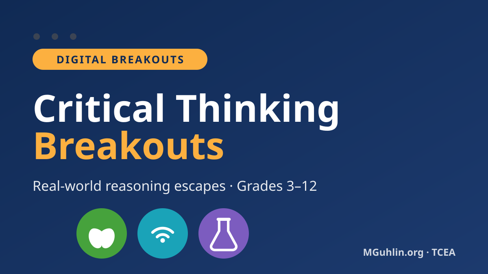
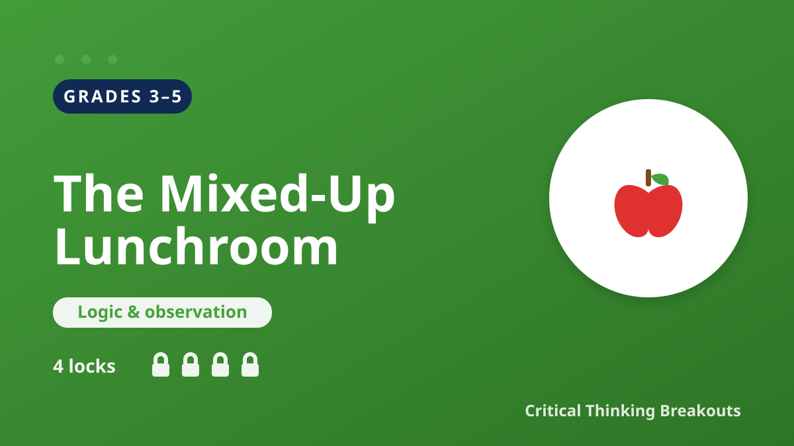

Critical Thinking Breakouts
Three real-world reasoning escapes — one per grade band. Students open clues, weigh evidence, and crack four locks using logic, media literacy, and scientific skepticism. No logins, no prep, runs in any browser.


Grades 3–5The Mixed-Up Lunchroom
Four lunch trays got mixed up. Match them using only what the clues prove — and learn when to say "the clue doesn't show that."
Open breakout Grades 6–8
Grades 6–8
Signal Check: The Viral Claim
A shocking post is going viral. Trace it to the source, count the red flags, and decide whether to share — or stop the rumor.
Open breakout Grades 9–12
Grades 9–12
Lab Report Lockdown
A company's "miracle study" needs peer review. Catch the tiny sample, missing control group, and correlation-causation trap.
Open breakoutHow to use these
Each breakout works as a bellringer, partner activity, station, or quick filler. Project it for a whole-class "crack the locks," or let pairs race. Every lock ends with a short why so the reasoning sticks, not just the answer.
Each grade card opens a teacher launch page (no answer key shown) with a button to start the student breakout. Answer keys for all three are in the separate teacher answer-key page kept out of the student folders.
Self-contained: each page is a single HTML file. The only outside request is Google Fonts. No data is collected. See the privacy & compliance policy.
📄 Printable student recording sheet · 🔑 Teacher answer key is in answer-key.html (keep that one private).
🧭 Activity correlation guide — every activity by grade & content area, its TEKS alignment, and how it maps to the CLEAR Thinking Process.
📋 For educators — standards & classroom use
These breakouts and practice activities are aligned to the Texas Essential Knowledge and Skills (TEKS) and build reasoning across English language arts, science, and social studies. Consistent with Texas Education Code §28.0022, topics are presented objectively and free from political bias, and students reason from evidence rather than opinion. See the correlation guide for full alignment; no accounts, no logins, and no student data are collected — a supporting resource, not legal advice.